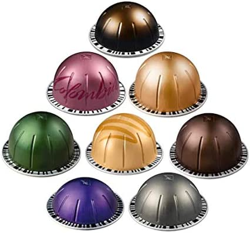

Kapszulás kávék
Az elmúlt évtizedekben egyre közkedveltebb kapszulás kávé népszerűsége abban rejlik, hogy pillanatok alatt elkészíthető, használata egyszerű és kényelmes. Ráadásul a széles választéknak köszönhetően mindenki megtalálhatja a neki tetsző fajtát. Napjainkban több márka kapszulájából és kávéfőzőjéből válogathatunk. A legtöbb kávégép már kompatibilis más márkájú kapszulákkal is, de még mindig vannak olyanok is, amelyek márkához kötötten működnek. A kávéhoz szükséges folyadékmennyiséget legtöbbször beállíthatjuk saját magunk, vagy választhatjuk az italfajtához előre programozott értéket. Sőt, elérhetőek olyan kávégépek is, amik vonalkód segítségével azonosítják a kapszulát, majd maguk állítják be a megfelelő folyadékmennyiséget.
- 
A Vertuo-val az igazán rövid kávéktól a nagyobb bögrékig bármit elkészíthet; legyen az egy Espresso, vagy akár egy Gran Lungo mindegyiket lágy, és gazdag crema réteg fedi. Mindezt az innovatív Centrifusion™ technológia teszi lehetővé, amely felismeri az egyes kávékapszulákat, és úgy szabályozza a kávé elkészítését, - vízhőfok, vízmennyiség, kapszula forgási sebesség stb. - hogy az tökéletesen megfeleljen a kiválasztott kávé stílusának.
-
Az Original rendszerrel a klasszikus espresso kávéélményt élvezheti. Az Original kávégépek 19 bar nyomású rendszere feltárja keverékeink friss aromáit. Próbálja ki kávégépeinket és Aeroccino tejhabosítóinkat, és készítsen el bármilyen kávéreceptet egyetlen gombnyomásra, a cappuccino-tól a hosszúkávéig!